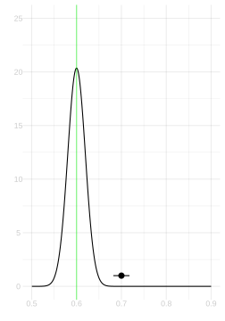
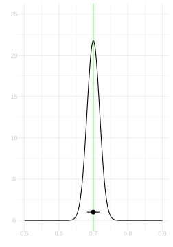
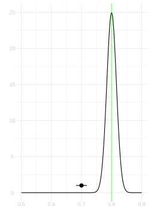

Download this assignment — unzip it, open homework-sample-size-coverage.qmd in Positron, and answer inside the answer blocks.
$$ \newcommand{X}{} \newcommand{Y}{}
$$
Problem 1: Interval Calibration
Suppose we’re estimating the proportion \(\theta\) of Georgia’s registered voters who will turn out for an election, using a sample of size \(n=625\) drawn with replacement. Below are three sampling distributions corresponding to three different values of \(\theta\): 0.6, 0.7, and 0.8. On each, I’ve drawn a 95% confidence interval centered at 0.7.

θ = 0.6

θ = 0.7

θ = 0.8
The green vertical line marks the true value of \(\theta\) in each case.
Exercise 16.1 (Part A)
Exercise
For which of these three values of \(\theta\) does the interval contain the true value? Looking at the sampling distributions, roughly what fraction of intervals constructed this way (centered at \(\hat\theta\) with the same width) would contain \(\theta\) in each case?
SolutionSolution
The interval contains \(\theta\) when \(\theta = 0.7\) (the center plot) and when \(\theta = 0.8\) (the right plot). It does not contain \(\theta\) when \(\theta = 0.6\) (the left plot).
But that’s the coverage of this particular interval. What matters is how often intervals like this one—centered at whatever \(\hat\theta\) we happen to get—cover \(\theta\). In each case, about 95% of intervals would cover, because the interval width was chosen to span the middle 95% of the sampling distribution, and the sampling distributions have about the same width for all three values of \(\theta\).
The key insight is that coverage depends on where \(\hat\theta\) falls relative to \(\theta\), not on where we’ve drawn a single fixed interval.
Exercise 16.2 (Part B)
Exercise
If you wanted to have 95% coverage no matter which of these three \(\theta\) values was true, would you need to make your interval wider, narrower, or keep it the same? Explain briefly.
SolutionSolution
Keep it the same width (or very nearly).
The width of a 95% confidence interval for a proportion is approximately \(1.96\sqrt{\theta(1-\theta)/n}\). This is largest when \(\theta = 0.5\) and decreases as \(\theta\) moves toward 0 or 1. Since \(\sqrt{0.21} \approx 0.46\), \(\sqrt{0.21} \approx 0.46\), and \(\sqrt{0.16} = 0.40\) are all close, the intervals we’ve drawn are close to the right width for all three values of \(\theta\). In practice, since we don’t know \(\theta\), we estimate the width using \(\hat\theta\), and this gives us close to 95% coverage across a wide range of true \(\theta\) values.
Exercise 16.3 (Part C)
Exercise
Suppose you wanted to achieve 99% coverage instead of 95%. By what factor would you need to multiply the interval width?
Hint: For a normal distribution, 95% of the probability is within \(\pm 1.96\) standard deviations of the mean, and 99% is within \(\pm 2.58\) standard deviations.
SolutionSolution
You would multiply the width by \(2.58/1.96 \approx 1.32\).
The 95% interval has width \(2 \times 1.96 \times \sigma\) and the 99% interval has width \(2 \times 2.58 \times \sigma\), so the ratio is \(2.58/1.96 \approx 1.32\). The 99% interval is about 32% wider than the 95% interval.
Problem 2: Sample Size Calculation
Suppose you’re planning a survey to estimate the proportion of Georgia’s registered voters who will turn out for an election. You want your 95% confidence interval to have a width of no more than \(\pm .02\), i.e. \(\pm\) 2 percentage points.
Exercise 17.1 (Part A)
Exercise
Using the normal approximation, how large a sample do you need? You don’t know \(\theta\), so use the worst case.
SolutionSolution
\[
\hat\theta \pm 1.96\sqrt{\frac{\theta(1-\theta)}{n}} \qqtext{has half-width} .02 \qqtext{when}
1.96\sqrt{\frac{\theta(1-\theta)}{n}} = .02
\] Solving for \(n\) and using the worst case \(\theta(1-\theta) \le 1/4\), \[
n = \frac{1.96^2 \times 1/4}{.02^2} = \frac{1.96^2}{4 \times .0004} = \frac{3.84}{.0016} = 2401.
\]
Exercise 17.2 (Part B)
Exercise
Suppose you’ve already done a pilot study with \(n=625\) people and found that your 95% interval has a half-width of about \(.04\). You want to cut the half-width in half, to \(.02\). How large a sample do you need?
Do this the easy way: compare the width you have to the width you want.
SolutionSolution
To halve the width, we need to quadruple the sample size. That’s because the width is proportional to \(1/\sqrt{n}\), so to cut it by a factor of 2, we multiply \(n\) by \(2^2=4\). \[
n = 625 \times \p*{\frac{.04}{.02}}^2 = 625 \times 4 = 2500.
\]
Problem 3: Checking Coverage
Now let’s verify that all this works in practice.
Exercise 18.1 (Part A)
Exercise
Write a function interval that takes a sample Y and returns a 95% confidence interval for \(\theta\) using the normal approximation. It should return a vector of length 2: the lower and upper bounds.
SolutionSolution
interval =function(Y) { theta.hat =mean(Y) se =sqrt(theta.hat * (1- theta.hat) /length(Y))c(theta.hat -1.96* se, theta.hat +1.96* se)}
Exercise 18.2 (Part B)
Exercise
Using the GA turnout population, draw 10,000 samples of size \(n=625\) with replacement. For each sample, compute your interval. What fraction of these intervals contain the true value of \(\theta\)?
SolutionSolution
theta =mean(y)covers =1:10000|>map_vec(function(.) { Y =sample(y, size=625, replace=TRUE) ci =interval(Y) ci[1] <= theta & theta <= ci[2]})mean(covers)
This should give a number close to 0.95.
Exercise 18.3 (Part C)
Exercise
Repeat Part B, but now also compute a 95% bootstrap interval for each sample. Compare the coverage of the normal approximation interval and the bootstrap interval.